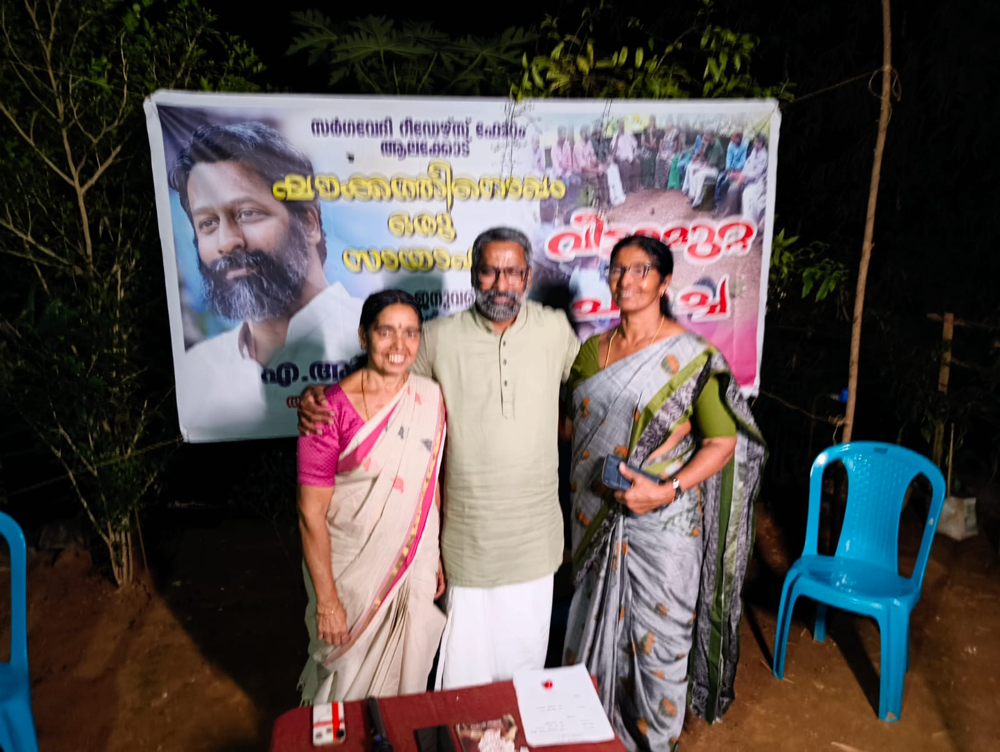

പത്തു മുപ്പത്തഞ്ചുവർഷം മുമ്പ് സഹപ്രവർത്തകനിൽ നിന്നും വാങ്ങി വായിച്ചിരുന്ന കലാകൗമുദിയിലൂടെയാണ് ഗുരു നിത്യചൈതന്യ യതിയെ അറിയാൻ തുടങ്ങിയത്. പിന്നീട് കുറെ കാലം അതൊരു ശീലവും അത്ഭുതവുമായി തുടർന്നു.
കുടുംബത്തിലും ചുറ്റുപാടുകളിലും ഇത്തരം സ്ത്രീ വായനകൾ കാര്യമായ ഗുണം ചെയ്യുന്നില്ലെന്ന തിരിച്ചറിവ് ശീലം കുറച്ചു. മാതൃഭൂമി പത്രത്തിലെ വായന തുടർന്നു. പക്ഷെ തൊഴിലിടത്തിൽ കുട്ടികളുടെയടുത്ത് ആ വായന ഏറെ ഗുണം ചെയ്തിരുന്നു.
വിരമിച്ച് വർഷങ്ങൾ കഴിഞ്ഞിട്ടും – പ്രൈമറി ടീച്ചറായിരുന്നിട്ടും കൂടി – ഇന്നും ശിഷ്യഗണങ്ങളുടെയടുത്തു നിന്നും അത് അനുഭവിക്കുമ്പോൾ അന്നത്തെ വായനയെ സ്മരിക്കാറുണ്ട്.
കൊറോണക്കാലം മുതലിങ്ങോട്ട് ചില സഹപാഠികൾ അയച്ചു തരുന്ന നവമാധ്യമ സന്ദേശങ്ങൾ വഴിയാണ് ഷൗക്കത്തിനെ അറിയാൻ തുടങ്ങിയത്. യതിയെക്കുറിച്ചുള്ള മുൻ വായന അതിനു ശക്തി പകർന്നു.
ആലക്കോട് സർഗവേദി റീഡേഴ്സ് ഫോറത്തിലെ വീട്ടുമുറ്റസദസ്സിൽ അദ്ദേഹം അതിഥിയായെത്തുന്നുവെന്നറിഞ്ഞപ്പോൾ സന്തോഷത്തിലുപരി ആകാംക്ഷയായിരുന്നു. ഒന്നുരണ്ടു മണിക്കൂറുകൾ കഴിഞ്ഞുപോയതറിഞ്ഞില്ല.
പറഞ്ഞത് കൂടുതലും കുട്ടികളെ കുറിച്ചായിരുന്നു. തൈച്ചെടികൾ പുഴുക്കുത്തേൽക്കാതെ വളർന്നാലെ പ്രകൃതിയുടെ ഹരിത മേഖല പുഷ്ടിപ്പെടൂ – പ്രപഞ്ചം ശക്തിപ്പെടൂ – എന്ന തിരിച്ചറിവായിരുന്നു പറഞ്ഞു വെച്ചത്.
വൈവിധ്യങ്ങളുടെ സർഗസംഗമത്തിന് കളമൊരുക്കിയ ആലക്കോട് സർഗവേദിയുടെ ഒരിലയായ് തളിർക്കാൻ കഴിഞ്ഞതിലുള്ള ധന്യത നിസ്സീമമാണ്.
❤️🙏🏻